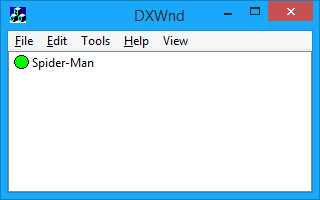

DxWnd comes with a simple graphical interface. The initial view is shown below:

The main window shows the list of hooked programs. DxWnd can currently handle up to 256. Trying to add more than that will produce an error message. Keep in mind that DxWnd bundles contain an export subfolder where all supported games have their own default configuration ready to be imported, but, because of the program's absolute path value, these entries will actually work only after updating the path with the proper local value.
As shown in the picture, each configuration line includes an icon with the program's status, color-coded as follows:
|
blank icon: the program's given path cannot be found and the entry won't work until the path is corrected. |
|
gray icon: the hook is not enabled: this program can be activated by the DxWnd menu, but won't be windowed. |
|
green icon: the hook is enabled and the program will be windowed when run from the DxWnd interface or from its normal executable or shortcut. |
|
red icon: the program requires code injection, so it will need to be activated from the DxWnd interface only. |
You can activate commands via the top menu or by right-clicking on a row in the application list.
DxWnd is also able to operate iconized in the System Tray, where it shows its state (either IDLE, READY or RUNNING) and runs a few useful commands.
DxWnd detects video settings when it is started, and compares them to the current value after killing a task or terminating itself. If it finds differences, it asks whether you want to restore the previous screen setting. This is quite useful to handle all the games that terminate without restoring the previous setting, as may happen when they die abnormally.
Created with the Personal Edition of HelpNDoc: Generate EPub eBooks with ease